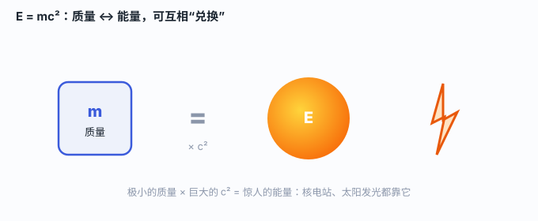

一、它到底在说什么
E = mc² 里：E 是能量，m 是质量，c 是光速。它说——一个物体的总能量，等于它的质量乘以光速的平方。换句话说，质量并不是“死重”，它本身就是一种被锁起来的能量。

这和我们直觉相反：平时质量就是“有多重”，能量是“能干什么”。但在相对论里，它们是一回事——就像同一笔钱，既可以写成“现金”，也可以写成“存款”。
二、为什么偏偏是 c²？因为汇率太大了
这个公式里最“吓人”的是 c²。光速 c ≈ 30 万公里/秒，c² 就是约 9×10¹⁶（九亿亿）。这意味着：哪怕一丁点质量，也对应着海量的能量。
💡 算一笔账
1 克质量（大约一枚回形针）如果完全转化成能量，约相当于 2 万吨 TNT 炸药。所以核反应里“消失”的那一点点质量，释放出的能量却大到惊人——不是因为反应“造”出了能量，而是质量本身就是能量。
三、质量亏损：反应前后“轻了一点点”
在核反应里，反应前的总质量会略微大于反应后的总质量，少掉的这点叫“质量亏损”。它并没有消失，而是按 E=mc² 变成了能量释放出来。
- 核裂变：重原子核（如铀）分裂成较轻的核，总质量略微减少，放出能量——核电站、原子弹都基于此。
- 核聚变：轻核（如氢）结合成较重的核，同样“亏”一点质量、放出更多能量——太阳和氢弹都靠它。
四、我们晒到的阳光，源头就是它
太阳核心每秒都在进行海量核聚变，把约 6 亿吨氢聚变成氦，其中约 400 万吨质量“亏损”掉、转化为光和热洒向太空。你晒到的每一缕阳光，源头都是 E=mc²。
这就解释了为什么恒星能燃烧上百亿年：它们的“燃料”不是化学燃烧（那点能量早烧光了），而是质量本身在慢慢“兑现”成能量。
五、同一把钥匙，开两扇门
E=mc² 既解释了和平的核电站、也解释了毁灭性的核武器。爱因斯坦本人是和平主义者，曾因纳粹的威胁在 1939 年致信罗斯福总统提醒原子能的威力，但战后也强烈呼吁管控核武器。科学给出力量，怎么用，是人类的抉择。
一句话记住：质量 = 能量；乘上巨大的 c²，一点点质量就是巨大的能量。核电站和太阳，都靠它“兑现”。